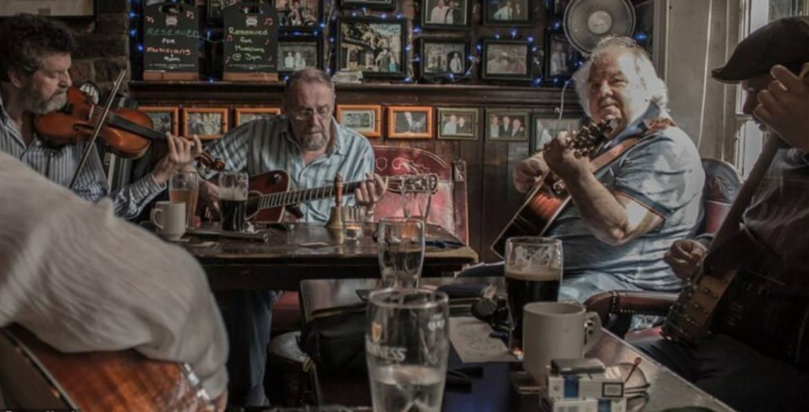
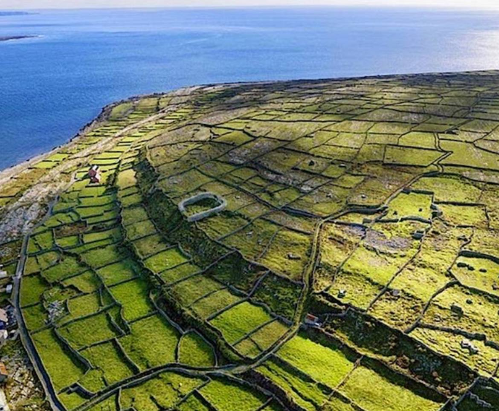
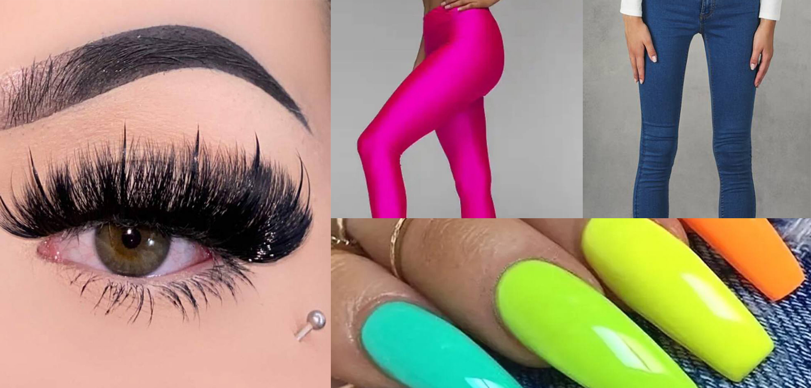
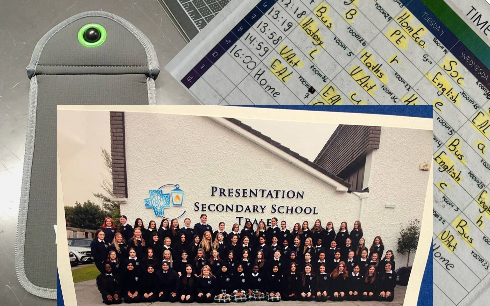

В Ірландії бабусі не копаються в городах 24/7, не сидять вдома чи на лавочках загорнуті в хусточки, як у нас часто буває. Тут вони ведуть активний і яскравий спосіб життя. Часто беруть участь у спортивних марафонах, благодійних забігах, танцювальних заходах та йога-класах для людей поважного віку. Але найцікавіше — це те, як вони тусуються! Їм за 70, а вони співають караоке у барах, п'ють ель, танцюють на повну і щиро веселяться так, ніби це їхній останній вечір — хоча, насправді, це лише черговий п'ятничний вихід у місто. Таке ставлення до життя заряджає позитивом і вчить нас не боятись віку.
Ірландія — це просто величезні зелені поля, на яких немає жодних будинків. Ви можете їхати багато кілометрів і не побачити жодної будівлі — лише поля та вівці, що пасуться на них. Ці простори настільки великі, що їх можна порівняти з сотнями футбольних полів, які розкинулися поруч, ніби справжній зелений океан. Часто можна побачити кам'яні огорожі, які перетинають поля — вони залишились ще з давніх часів. А ще тут повітря дуже чисте, і майже скрізь чути пташиний спів або звуки вітру. Ідеальне місце для тих, хто втомився від міського шуму й хоче дихати на повні груди.
Так, ну мода ірландців для українських підлітків точно не зайде. Почнемо з того, що тут дуже популярні накладні вії розміром як 3D та 4D, довжелезні нігті й фальшивий тон із помаранчевим відтінком — "штучність" тут у тренді. Одяг — це ще цікавіше: місцеві носять спортивні костюми, футболки з емблемами команд, і навіть у кафе або на побачення можуть прийти в одязі, як на тренування. Оверсайз, який так популярний серед української молоді, тут майже не носять. Замість цього — облягаючі речі, яскраві кольори, кислотні відтінки та навіть блискітки. Це все стосується не лише підлітків — подібний стиль часто можна побачити на дорослих або навіть літніх людях. Це своєрідна впевненість і свобода вираження, яку ірландці дуже цінують.
Школа в Ірландії дуже відрізняється від тієї, до якої ми звикли в Україні. І, чесно кажучи, не все тут так весело
Телефони — це табу
Найстрашніше для кожного учня — це повна заборона на телефони. Ми не можемо їх навіть просто тримати в кишені! Телефон або треба залишати в шафці, або класти в спеціальний чохол, який закривається на ключ. І ключ, звісно, у вчителя. Витягнеш телефон — будуть проблеми. Для більшості дітей це справжній жах, бо без телефону ні музики, ні мемів, ні тихенького гортання TikTok на перерві 🫠
Шкільна форма — обов’язкова
Ще один момент — усі носять форму. Кожна школа має свій стиль: блейзери, сорочки, іноді навіть краватки. Виглядає це класно, але іноді хочеться просто вдягнути худі й кросівки.
В ірландських школах розклад трохи інший, ніж у нас: спочатку два уроки, потім коротка перерва на 15 хвилин, знову два уроки — і велика перерва на 55 хвилин, під час якої всі йдуть їсти або просто гуляють але строго на території школи. Після цього ще кілька уроків — і лише потім додому. Телефони, як завжди, заборонені, тож на перервах доводиться спілкуватися «по-старому» — просто говорити з людьми 😄 Але, незважаючи на всі ці суворі правила, навчання тут цікаве своєю програмою.
